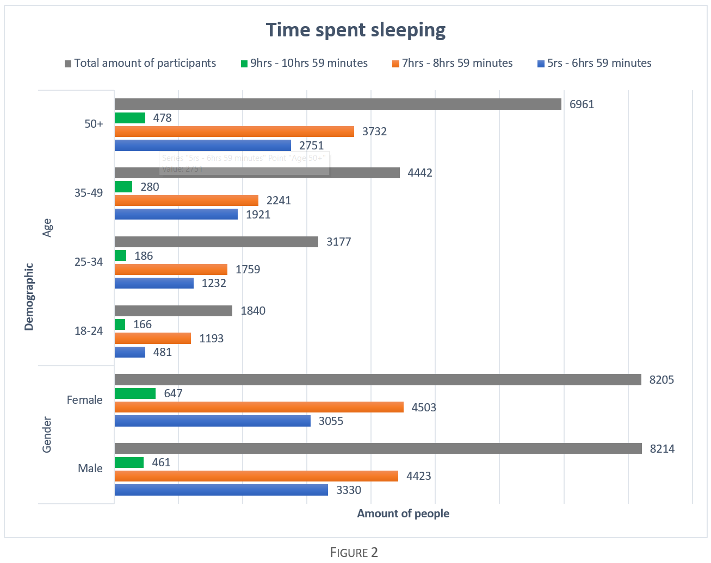
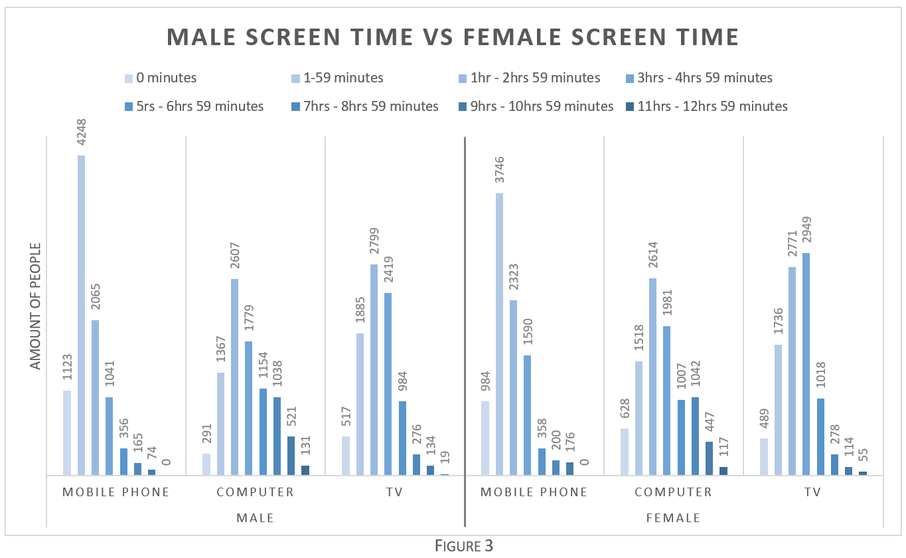
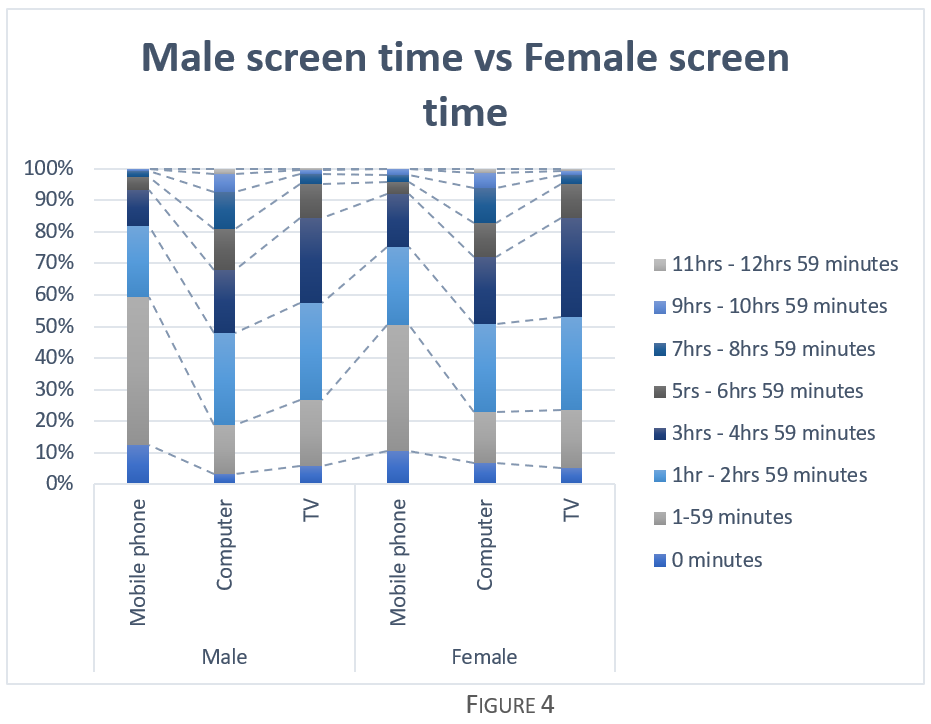
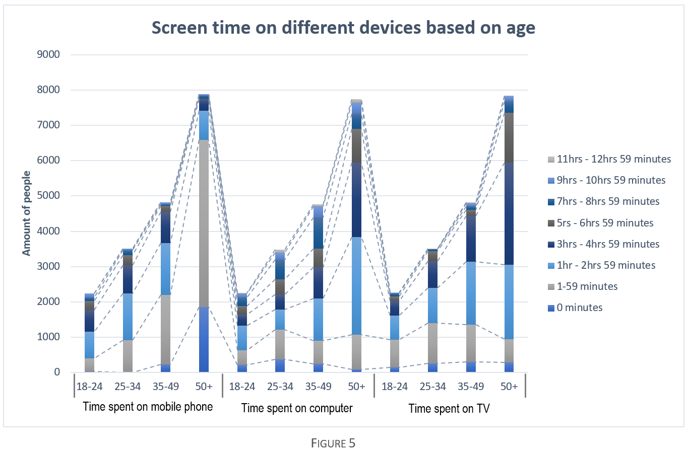
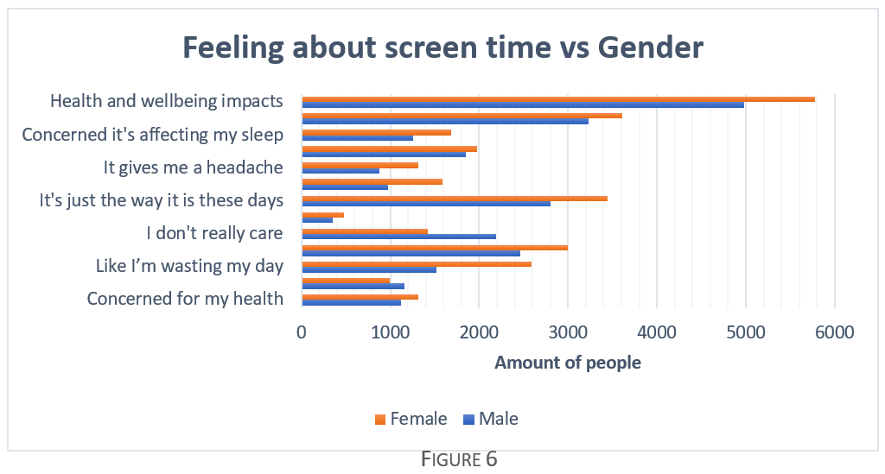
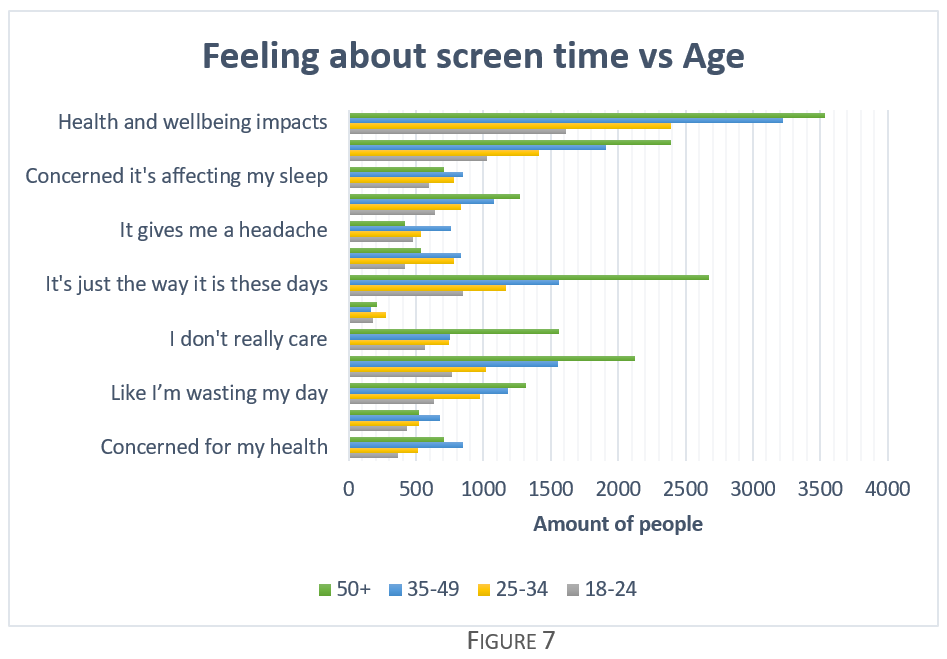
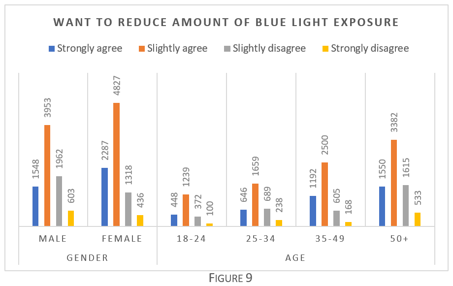

Sleep Comparison

By plotting the table on a bar graph, there are multiple things that become clear simply due to being able to see the data in a visual manner.
We can instantly tell that the majority of each age and gender group are able to get the optimal amount of sleep, and otherwise they are most likely to get 5 to 7 hours of sleep. It is clear that comparatively it is a very small minority of people that sleep for 9 to 11 hours.
The grey bar shows the total amount of participants within each group. We can see that in the age portion of the graph, the total amount of participants within each age group changes by a large amount, meaning that numbers for each age group can’t be directly compared. However, the gender bracket had very similar total numbers between male and female – with a deviance of only 9 people. This means that the results displayed can be compared in a quantitative manner. As shown, both male and females produced very similar results with the largest difference being between the amount of people only sleeping 5 to 7 hours.
Screen Time Against Gender
As seen above, the screen time of males is compared against the screen time of females. This graph allows information to be extracted regarding the differences between the screen time of the male and female demographic within the source data.

The most common time period for screen time in general among both male and females is between 1 and 3 hours daily. From a quantitative perspective, it is found that on average males seem to spend more time in front of computer screens, while on average females spend more time on mobile phones.
This data can also be displayed using a 100% stacked column as shown in figure 4, this allows us to view the information in terms of percentages. The reason this can be done is because as shown earlier in figure 2, the total amount of participants is almost equal for both male and female (with very minor difference). As a result of this, when the data is put into percentages, they can be compared due to the 100% of both male and female being roughly the same total amount. The series lines in figure 4 make it easier to visualise the differences between what sort of screen most time is spent on as well. The graph clearly shows that there is a small minority of people that spend 0 minutes on screens, and there is also a very small minority of people that spend 7+ hours on screens every day for the general case. The fact that both male and females spend a considerable amount of time on screens is useful in this study, as later on it allows the comparison between screen time and sleep to be more effective.
Screen Time Against Age
A stacked column is used to represent the screen time on different devices based on ages. The reason a 100% stacked column isn’t used like figure 4 is due to the total participants for each age group varying greatly as shown in figure 2 – If the 100% stacked column was used the data would be significantly inaccurate in this case. As a result of this the total amount of people in each age bracket has to be taken into account when analysing the data from this graph. One of the main things noticeable on the graph is that the majority of the older demographic (50+) spend less time on either mobile phone or computers, and rather spend more time on the TV.
Screen Time Feeling Against Gender

Figure 6 shows some of the qualitative data found from the target demographic. The values represent selections made by female and males regarding how they felt about specific aspects of screen time.
As clearly displayed in Figure 6, in general both male and females are concerned that their usage of screen time impacts their health and wellbeing, as well as affects their sleep. This representation of the data qualitatively supports my original hypothesis as it shows people believe their exposure to sleep may be leading to poor sleeping habits, which in turn worsens their health and wellbeing. Although this representation does not provide a quantitative comparison, it shows that the purpose of the study is a valid concern/issue that people face in their daily lives.
Screen Time Feeling Against Age
Figure 7 displays the same information as figure 6, except against age rather than gender. It shows a similar result as figure 6, although the age displays some interesting results. It is shown that a lot of the 50+ age group selected “It’s just the way it is these days” which fits into a stereotype of the age bracket. Nevertheless, the “health and wellbeing impacts” bracket has a very large amount of people that selected it in both graphs. This shows that by a large figure, people in general notice such correlation between screen time and their wellbeing which would include factors such as sleep.
Demographic Concerns
Figure 8 shows the results from the participants selecting how much they agreed with being “concerned about blue light exposure”. The graph clearly shows that the majority of people select either “strongly agree” or “slightly agree” rather than disagreeing. This result further reiterates the basis of my study, that blue light exposure is the cause of issues relating to sleep. The fact that the majority of people are concerned about blue light exposure shows that the majority of the demographic are aware of the issues blue light exposure can lead to. Due to the larger size of the demographic, it could possibly be assumed that the majority of the general public must be worried about what blue light exposure can do.
Concern Implications
Following on from figure 8, figure 9 shows the results of the participants being asked whether their concern of blue light exposure causes them to actively want to reduce the amount of exposure. The results of this similarly show that the majority of people do indeed want to reduce their amount of blue light exposure. This only further reiterates the point that people in general are aware of the issues blue light exposure may induce, and therefore want to reduce the exposure – Even though the screen time results may show people still spend a fair amount of time on screens, they still want to reduce their amount of blue light exposure.